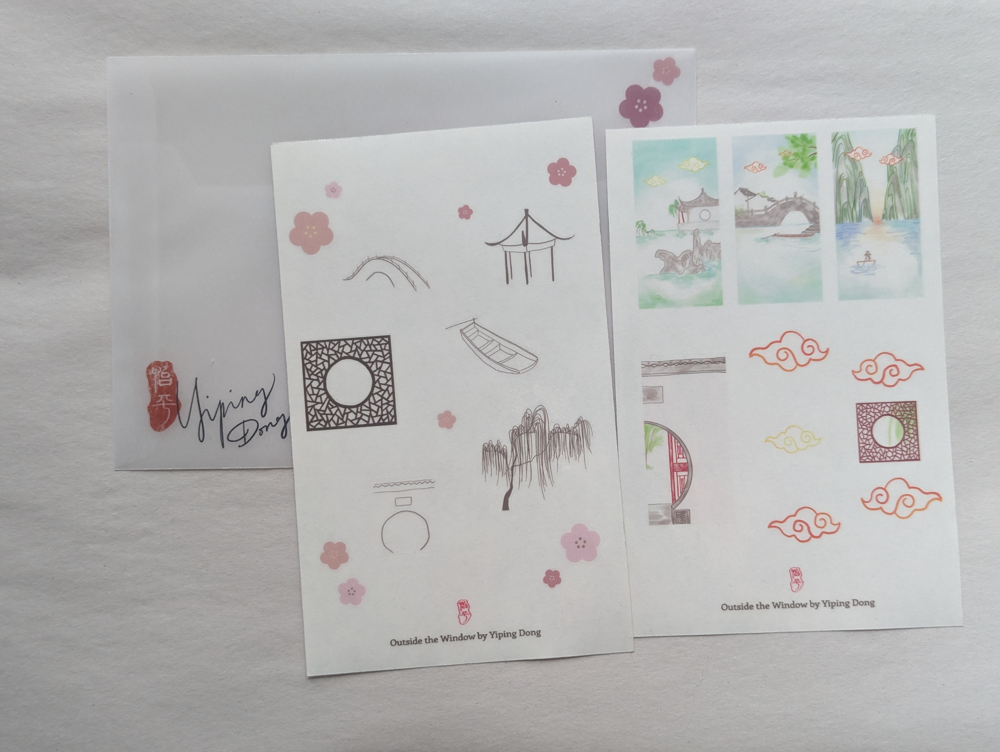

◈Watch on Google Drive
The series of images started with a scenery inside a window, and get out of the room, step into the garden, then exit the garden, into the beautiful world.
This is an image only zine. I did the drawings digitally with Pro Create, and printed the images on vellum.
The zine is hand saddle stitched.


I also made note sheets and stickers with the images of this zine.
The stickers are printed on vinyl, and the note sheets are risographed with four colors.
